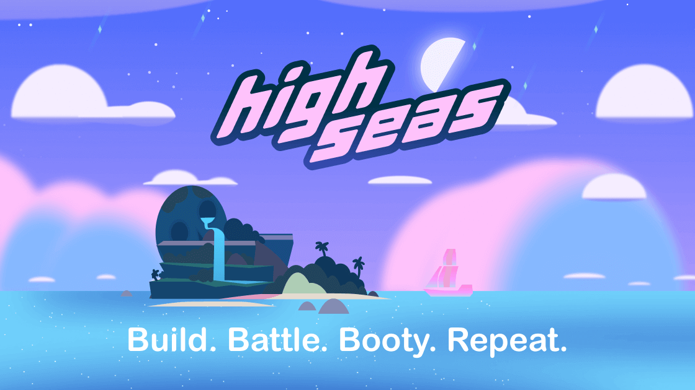

プロジェクト

HomeLab Pi
Raspberry Pi を使用した個人サーバーの構築。Docker コンテナ、Nginx Proxy Manager、および MariaDB データベースを用いた Web サービスを実装。
Raspberry Pi
Linux
Docker
Nginx
MariaDB
リバースプロキシ
独学
Webアプリケーション
VPN

ホスティング・VPS 企業シミュレーション
VLAN 設定、ファイアウォール、ルーティング、Proxmox による仮想化を含む、ホスティング企業の完全なインフラシミュレーション。
Cisco
VLAN
ルーティング
ファイアウォール
Mikrotik
Active Directory
VPN
Proxmox
チームワーク
コミュニケーション
DNS
DHCP
カスタマーサポート
Webアプリケーション

Juice Game Jam
ゲームジャムで 100 時間かけて開発したビデオゲーム。上海（中国）への渡航費用が支給されました。
Godot
GDScript
チームワーク
創造性
時間管理

High Seas ハッカソン
100 時間以上のコーディングを行ったハッカソン。ゲーム開発、Web 開発、Python など多様な技術を実験・習得しました。
Python
AI
Godot
GDScript
HTML
JavaScript
CSS
C#
API
Cosmos

CanSat
缶サイズのミニ人工衛星の開発プロジェクト。大気データと紫外線放射の収集を目的としました。
Arduino
C++
Arduino IDE
電子工学
センサー
はんだ付け
3Dモデリング
モジュール
Adafruit
チームワーク
Python
技術スキル
長押しして左右にドラッグ
オペレーティングシステム

Linux
Windows Server
Active Directory
Fedora
Ubuntu Server
Raspberry Pi OS

ターミナル
仮想化・コンテナ
Docker
Kubernetes
Proxmox
VMWare
VirtualBox
QEMU
ネットワーク・ファイアウォール
Cisco

Mikrotik

ルーティング

スイッチング
Ubiquiti Unifi
WireGuard
WireShark
Web サーバー
Apache
Nginx Proxy Manager
MySQL
メール

DNS
GLPI
FreePBX
Squid Proxy
WordPress
スクリプト・プログラミング
Bash
Python
PowerShell

Ansible
GDScript
職務経歴
IT技術者（インターンシップ）
Informàtica Ràpita
2025年6月 – 7月
- カスタマーサービス
- コンピューターハードウェアの点検・修理
- 顧客の問題解決
- アンテナおよびカメラの設置
IT技術者（インターンシップ）
St Augustine College、マルタ
2025年3月 – 5月
- 生徒用コンピューターの準備
- コンピューターの修理
- オフィスソフトウェアのインストール
- Active Directory の管理
WordPress Web デザイナー（インターンシップ）
Picture Perfect Malta
2024年2月 – 3月
- WordPress を使用した企業向け Web サイトのデザイン
- Web サイトの管理・保守
IT技術者（インターンシップ）
IES Sól de Riu
2023年10月 – 2024年4月
- 生徒・教職員の問題解決
- コンピューター機器の修理・保守
- テクニカルサポート
学歴
上級職業訓練 – ネットワークコンピューターシステム管理
2024年9月 – 2026年5月
IES Montsià
中級職業訓練 – コンピューターシステム・ネットワーク
2018年9月 – 2021年7月
IES Montsià
疑似コードによるプログラミング入門コース
2023年2月
OpenWebinars
OpenWebinars 奨学金オンボーディングコース
2022年12月
OpenWebinars